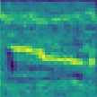
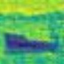

clean
corrupted test image
conv1


source features
Hebbian features
≈
oracle (true labels)
features break
Hebbian rule · no labels
as good as supervised
ImageNet-C error ↓ · lower is better
ResNet-18 · severity 5
source
85.7
TENT
62.7
NHL
60.4
−2.3 vs TENT
Hebbian early layers,
modulated by feedback